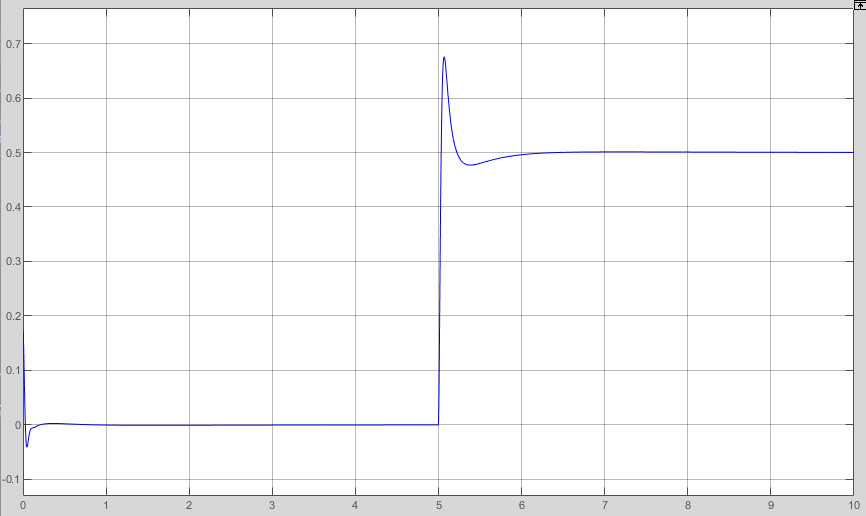
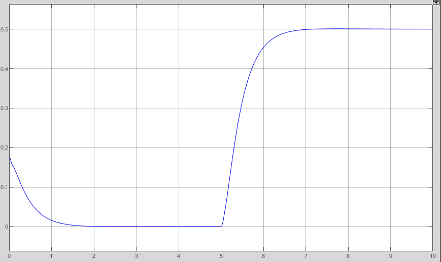

Fixed-wing flight control
Cessna 172: pitch damper and pitch-attitude autopilot
A complete design cycle on a nonlinear 6-DOF Cessna 172 model, trimmed in a steady climb at 5000 m.
- Longitudinal and lateral-directional models linearised numerically and checked against the analytical stability derivatives; modes compared with their literal approximations.
- Pitch damper sized from Level 1 flying-qualities criteria: short-period damping raised from 0.217 to 0.3.
- Pitch-attitude autopilot by root-locus compensation, implemented as a PID with ±25° elevator saturation and back-calculation anti-windup.
- Closed loop run in real time with the Simulink model driving FlightGear.
0.217 → 0.3short-period damping with Kq = −0.04
±15°pitch commands tracked in FlightGear



